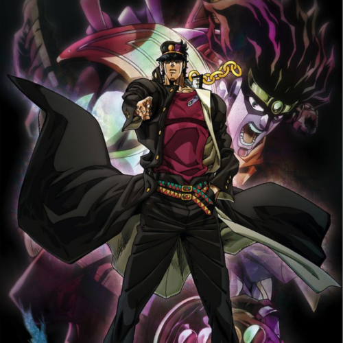
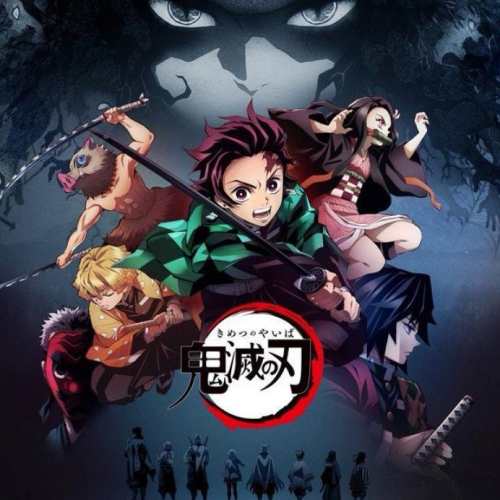
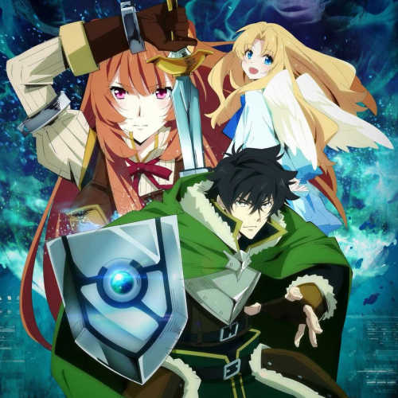
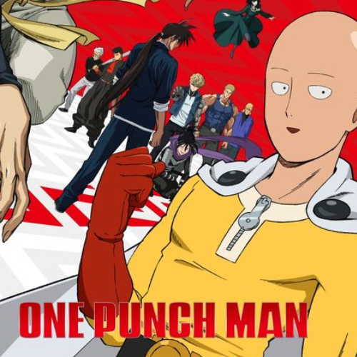
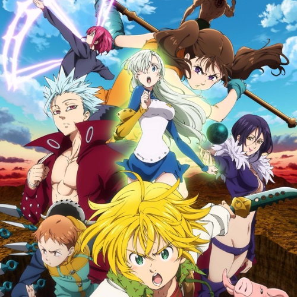

Boku no hero academia es un anime basado en el manga Boku no hero academia escrito por Kōhei Horikoshi. El anime cuenta con 4 temporadas.
En el anime se presenta una trama en la que la gente tienen poderes (tambien llamados Dones, Particularidades o Koseis) que las personas utilizan en su vida diaria. En este mundo hay una profesion de héroe que se dedica a protejer a los ciudadanos de los villanos que utilizan sus poderes para hacer el mal.
El protagonista es un chico llamado Izuku Midoriya que de pequeño soñaba con ser un héroe como el simbolo de la paz llamado All Might pero el medio le diagnostico que habia nacido sin un don.
Con el tiempo Izuku iba a terminar la segundaria y quería entrar en la preparatoria UE que es una preparatoria para heroes.
Cuando Izuku estaba regresando a su casa de la escuela un villano le ataca pero es salvado por su heroe de la infancia All Might. Izuku le pregunta si el puede convertirse en un heroe sin tener un don a lo que le responde que no puede pero descubre que All Might tiene un limite de tiempo en el que puede ser un heroe.
All Might habia perdido de vista al villano que atrapo por lo que se marcha a buscarlo. Cuando Izuku estaba volviendo ve al villano que estaba atacando a un compañero de su clase que siempre se metia con el pero Izuku intenta sarvarlo. All Might aparece y los salva.
Izuku se marcha pero All Might decide hacerlo su sucesor y entregarle su poder.
|
|

|

|

|

|

|